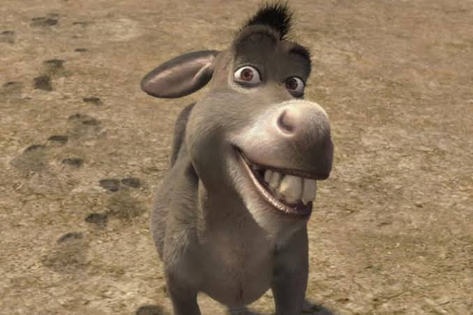
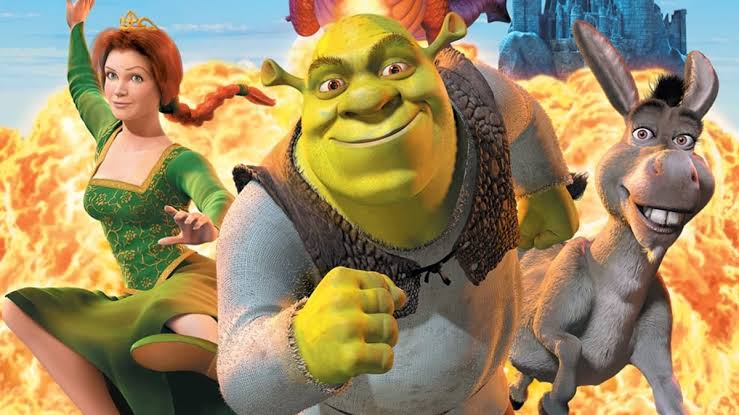
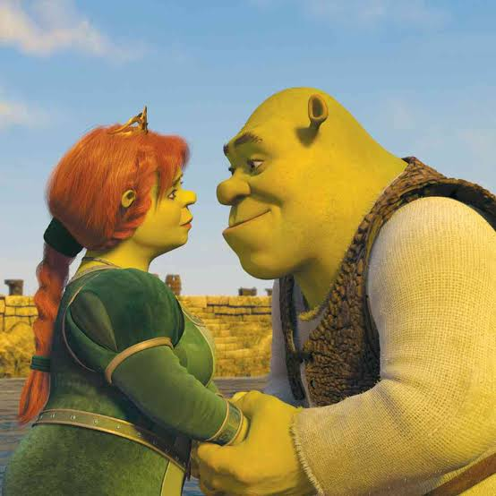

Bem-vindo ao Site Acessível
Shrek é uma animação icônica da DreamWorks lançada em 2001, que revolucionou o cinema infantil com seu humor irreverente e personagens inesquecíveis. O filme conta a história de um ogro rabugento que vive isolado em seu pântano até que sua tranquilidade é interrompida por uma invasão de criaturas mágicas. Para recuperar sua casa, ele faz um acordo com o ganancioso Lorde Farquaad e embarca em uma jornada ao lado do falante Burro para resgatar a princesa Fiona.
Galeria
 Cheio de sátiras aos contos de fadas, trilha sonora marcante e uma mensagem poderosa sobre aceitação e amizade, Shrek conquistou todas as idades e se tornou um clássico da animação.
o longo dos anos, Shrek se tornou mais do que um filme – virou um ícone da cultura pop. Com memes, referências em outras produções e até espetáculos musicais, a influência do ogro verde continua forte. Se você ainda não assistiu, ou se quer reviver essa aventura, não perca a chance de mergulhar novamente nesse mundo encantador e hilário. Explore nossa galeria, relembre cenas marcantes e aproveite este espaço feito especialmente para os fãs dessa incrível saga. Porque, no final das contas, quem disse que os ogros não podem ter finais felizes?